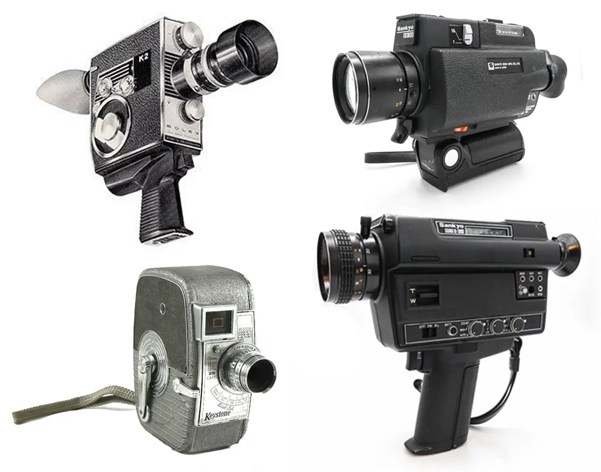
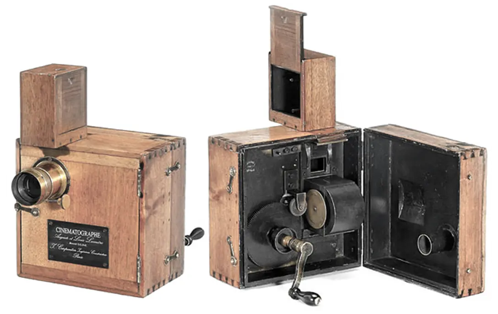
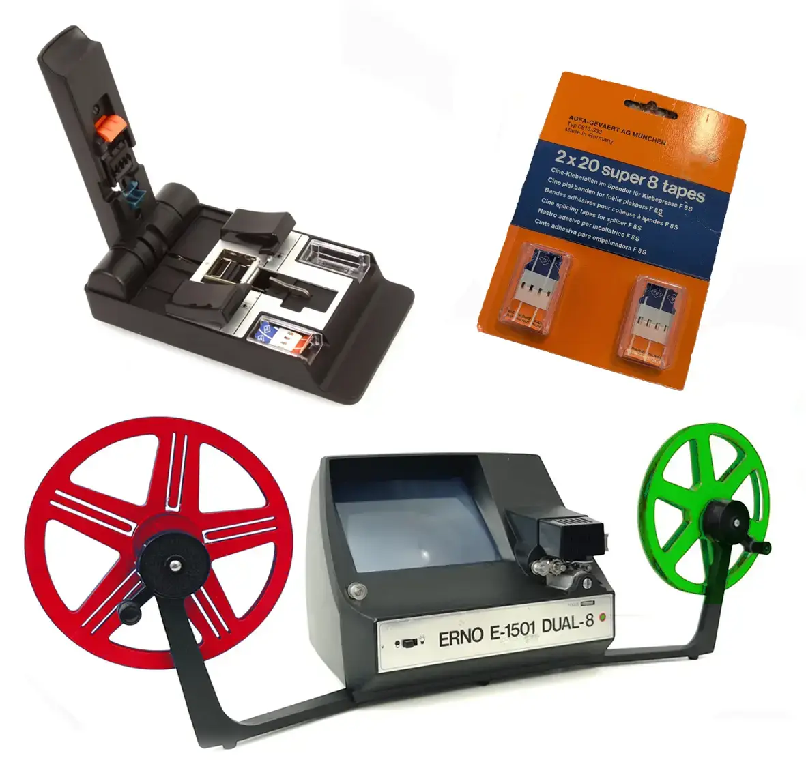
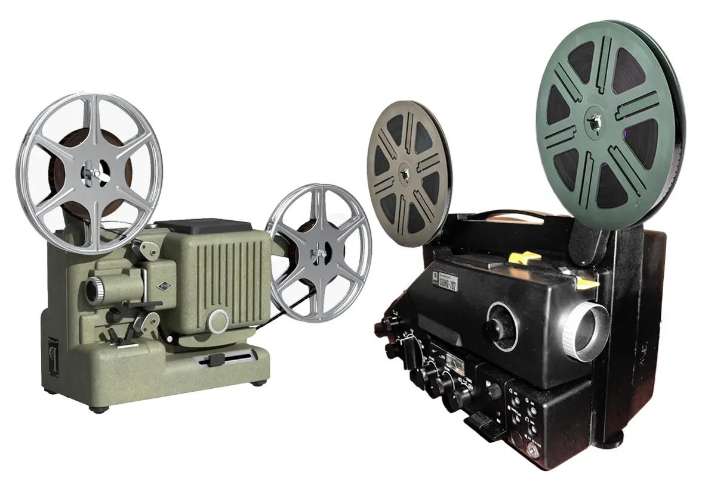
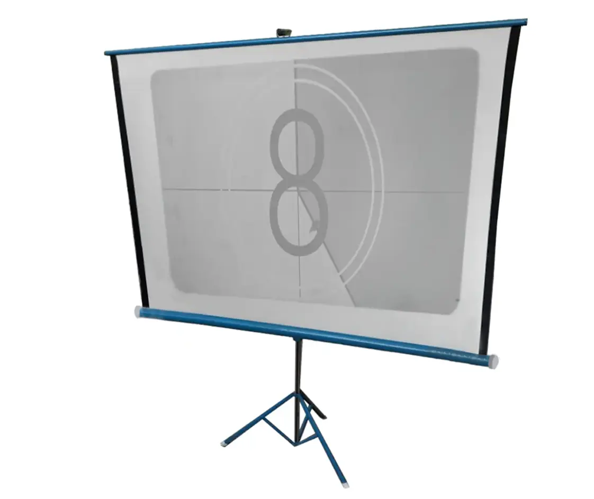
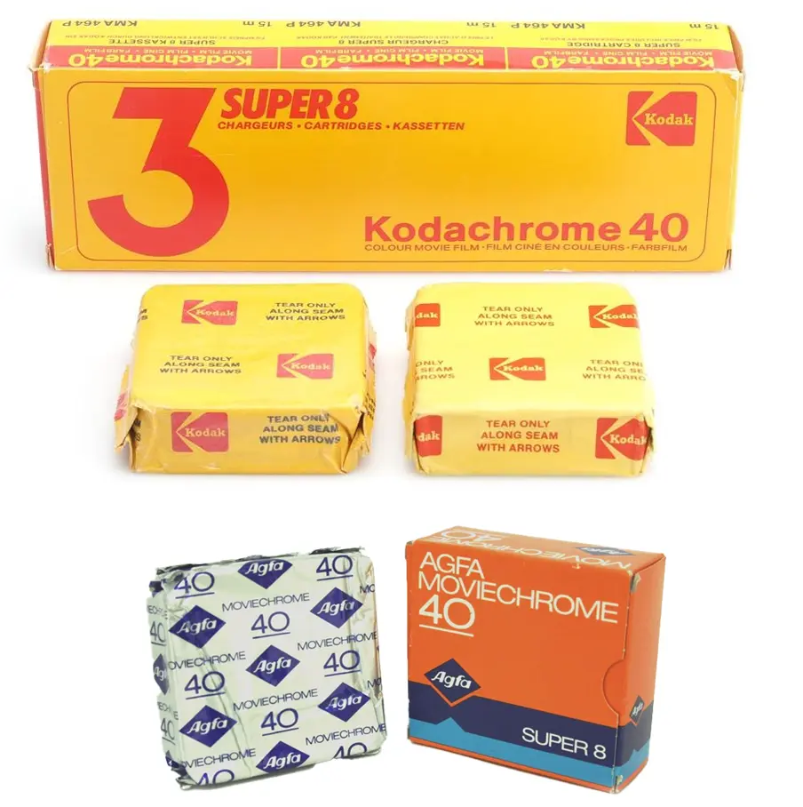

RODAR EN SUPER 8 EN 1981
A comienzos de los años 80, rodar una película seguía siendo una actividad lenta, costosa y bastante compleja, especialmente para un grupo de estudiantes de 15 y 16 años sin medios profesionales. Aunque ya existían el vídeo doméstico, los primeros ordenadores personales o incluso algunos sistemas electrónicos de grabación, la inmensa mayoría de las personas no tenía acceso a ellos, y el cine amateur seguía dependiendo casi por completo de la película fotoquímica.

Cámaras o tomavista de 8mm y Super 8mm.
El Super 8, pese a ser uno de los formatos cinematográficos más asequibles de su época, no resultaba precisamente barato. Un cartucho de apenas 15 metros permitía filmar solamente unos tres minutos de película, dependiendo de si se rodaba a 18 fotogramas por segundo —lo habitual en cine mudo amateur— o solo dos minutos y algo más a 24 fotogramas por segundo, velocidad utilizada normalmente para películas sonoras.

Focos y trípode.
A diferencia de la actualidad, donde cualquier teléfono móvil permite grabar durante horas sin apenas coste adicional, en 1981 cada segundo filmado tenía importancia. No existía la posibilidad de repetir tomas indefinidamente ni comprobar inmediatamente el resultado. Una vez terminado el rodaje, la película debía enviarse a revelar y, en Canarias, lo normal era esperar varias semanas antes de descubrir si las imágenes habían salido correctamente o si algún problema técnico había arruinado parte del material.

Empalmadora con sus cintas especiales y moviola.
Sin embargo, precisamente ahí residía parte de la magia. Recoger las bobinas reveladas, llegar a casa, montar el proyector y contemplar por primera vez unas imágenes que nadie había visto todavía suponía una experiencia difícil de explicar hoy en día.
Además del coste de la película y del revelado —que normalmente ya venía incluido en el precio del cartucho— había que disponer de cámaras, proyectores, focos, trípodes, empalmadoras y otros accesorios necesarios para montar y exhibir las películas. Todo ello convertía el cine amateur en una actividad completamente artesanal, donde cada fase requería paciencia, tiempo y cierta imaginación técnica.

Proyector de 8mm y Super 8mm.
Las cámaras tampoco ofrecían las facilidades actuales. Aquellas películas necesitaban enormes cantidades de luz y los sistemas de enfoque o exposición automática simplemente eran una utopía. Rodar en interiores era practicamente imposible sin focos potentes, y los efectos especiales debían improvisarse manualmente, muchas veces directamente durante el rodaje o manipulando posteriormente la propia película.

Pantalla para proyección.
En España, a comienzos de los años ochenta, la mayor parte de la película Super 8 que podía encontrarse en comercios especializados pertenecía a Kodak o Agfa. Existían otros fabricantes, como Fuji Film, aunque su presencia era menor. La popular Kodachrome 40 de Kodak era probablemente la emulsión más utilizada por los aficionados, mientras que Agfa comercializaba también película con banda magnética incorporada, una solución intermedia que permitía añadir posteriormente diálogos, música o efectos sonoros durante el montaje sin necesidad de utilizar la costosa película sonora profesional, aunque eso limitaba el uso del sonido directo a una posible grabación independiente en cintas de cassette o grabadoras, y que luego eran muy complicadas de sincronizar, de ahí que solo se utilizaban para poner dialogos o música a posteriori.

Películas virgenes de Kodak y Agfa
Visto desde hoy, todo aquel proceso puede parecer incómodo o extremadamente limitado. Sin embargo, precisamente esas limitaciones obligaban muchas veces a planificar mejor, improvisar soluciones y valorar cada minuto filmado. Quizá por eso muchas personas siguen recordando el Super 8 no solo como un formato cinematográfico, sino también como una experiencia profundamente creativa y emocionante.